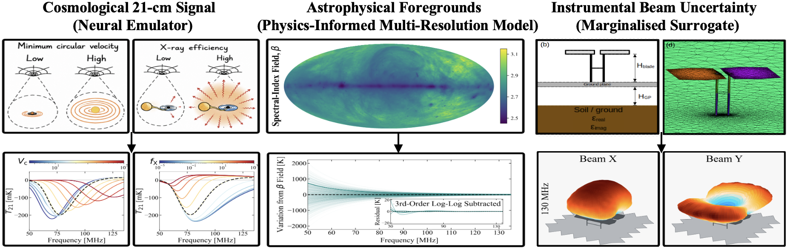
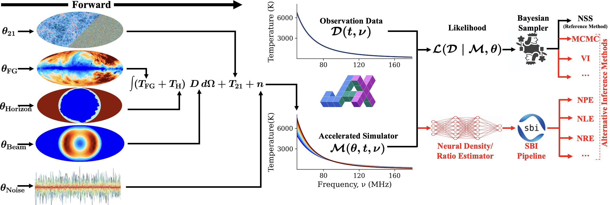
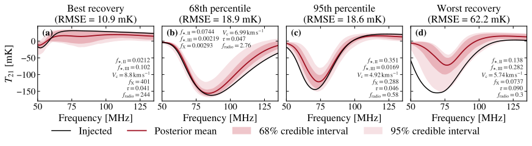

A Cross-Domain Simulator and Benchmark for Uncertainty Quantification in Global 21-cm Inference
J. Tutt1, H. T. J. Bevins1,2, J. Alvey1,
D. J. Anstey1, J. Cumner1, E. de Lera Acedo1 and A. Fialkov1
1University of Cambridge · 2Imperial College London · jlt67@cam.ac.uk
Sim2Science · NeurIPS 2026
Paris · 12 December 2026
The formation of the first stars and galaxies remains one of the least constrained epochs
in cosmic history. The sky‑averaged 21-cm signal of neutral hydrogen offers a direct window onto this era, but
extracting it represents an extreme case of inference under model misspecification. The signal lies
beneath foregrounds 104× brighter, mixed by an imperfectly known instrumental
response. With these nuisance components unconstrained a priori, strong degeneracies mean
an incomplete generative model can return a confident yet systematically biased posterior.
We present a state‑of‑the‑art, differentiable generative model of the full
observational chain, alongside simulated observations, providing a scientifically demanding
benchmark for stochastic samplers, SBI and VI.
7.2 × 107
faster generative model: 2.8 h → 0.14 ms on a single GPU
137
parameters across cosmology, astrophysics and computational electromagnetics
100
benchmark observations released with reference posteriors and evidences
94/100
injected signals entirely within their 95% credible band
384,939
simulations per second in batches of 512 on a single GPU
5.6–7.3 h
full nested-sampling run (posterior + evidence) on a single GPU

Figure 1: Multi-physics generative model.
Top: physical sources of uncertainty; bottom: their effect on the model. Left: a neural
emulator maps astrophysical parameters to the 21-cm signal. Centre: a physics-informed
multi-resolution model of the foreground sky. Right: a linear surrogate reconstructs
chromatic beam variations from antenna and soil perturbations.
1A Multi-Physics Generative Model
Cosmological Signal
A redshift-conditioned neural emulator of 21cmSPACE, mapping from astrophysics to the global signal.
Astrophysical Foregrounds
A physics-informed, multi-resolution sky model correcting the brightness and spectral index
of the Global Sky Model.
Electromagnetic Response
A hierarchical, second-order surrogate of 400 CEM simulations, whose linear latent space
enables marginal inference over the beam.
Fast enough for end-to-end inference
2Accelerator-Native Inference
JAX-Native
Differentiable and JIT-compiled: one network call plus tensor contractions per
simulation.
GPU Parallelism
Vectorised across frequency, observing time and batches of simulations.
Marginal Inference
All 100 beam coefficients are integrated out analytically, leaving 37 sampled
dimensions.
Parallel Nested Slice Sampling
A GPU-vectorised nested sampler, returning both the posterior and the Bayesian evidence.

Figure 2: Benchmark inference architecture.
Full-fidelity observations are modelled with the accelerated JAX generative model. GPU-native
nested slice sampling (NSS) provides the reference posteriors and evidences (black), while the
same model plugs directly into MCMC, VI and simulation-based inference pipelines (red).
… but is it accurate enough for reliable recovery?

Figure 3: Signal-profile recovery.
Representative injections ordered by minimum whole-profile credible level, from best (a) to
worst (d). Lines show the injection and posterior mean, shading the pointwise 68% and 95%
intervals; titles give the RMSE.
3Calibrated Signal Recovery
Agnostic Inference
The framework is not conditioned on the true sky realisation, beam or cosmology.
Full-Fidelity Testing
Evaluated on 100 unseen signals injected into full-fidelity simulated observations.
Calibrated Recovery
94% of injected profiles lie entirely within their 95% whole-profile credible band.
Constrained Recovery
75% of posterior means have an RMSE below the 25 mK noise level.
4An Open-Source Benchmark
The Open Problem
Intrinsically degenerate, multimodal posteriors in up to 137 dimensions
Reference nested sampling still takes hours per observation, even on a GPU
The field needs MCMC, SBI or VI that is both fast and calibrated
What We Provide
100 full-fidelity observations from held-out skies and CEM beams
A ready-to-run, differentiable JAX generative model and likelihoods
Reference NSS posteriors and evidences for every realisation
Limitations & Next Steps
Towards a digital twin: receiver calibration, heteroskedastic noise and secondary
observational effects slot in as modular extensions.
Inference is now the bottleneck: nested sampling scales as
O(D3) and already needs 5.6–7.3 GPU-h per 37-D run.
Next: benchmark SBI, VI and next-generation samplers as dimensionality grows.
References
[1] Tutt et al. 2026, Surrogate modelling and marginalisation of beam uncertainty, arXiv:2608.18962